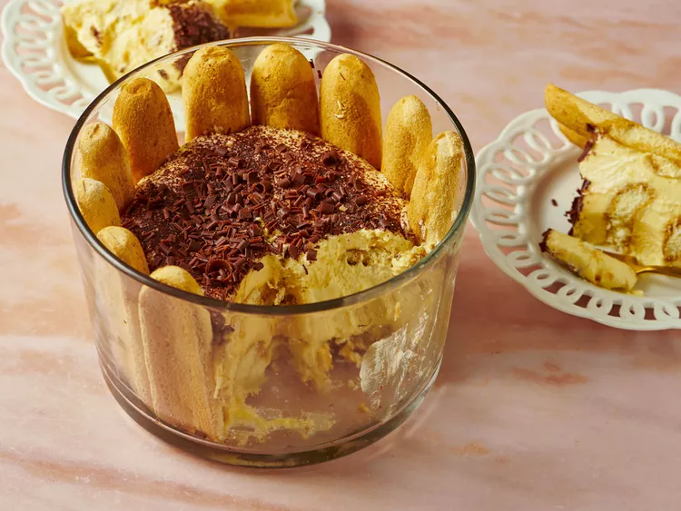

Il tiramisù è un classico dolce della cucina italiana che utilizza come incgredienti
principali il mascarpone e i savoiardi.
è un dolce molto zuccherato e con una spolverata di cacao
sopra per creare un buon contrasto dolce-amaro.